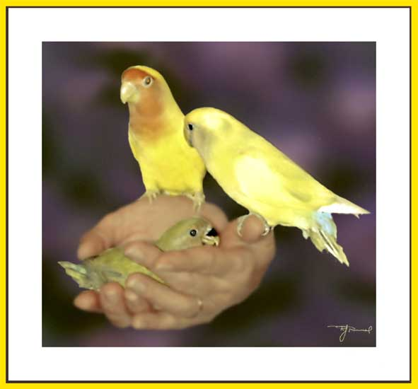

| Lei's Love Birds. Photo retouched. My daughter Lei began with one. But you know, its nice that a love bird has a mate. So two. However, things happen, and then there were four, then 7, and now, 9. I understand this is the limit. We'll see. |